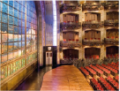
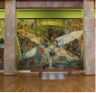
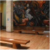
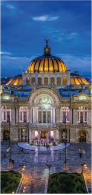

BELLAS ARTES



El Palacio de Bellas Artes es un recinto cultural ubicado en el centro histórico de la Ciudad de México, considerado uno de los más importantes en la manifestación de las artes en México. Este ha sido escenario y testigo de impactantes acontecimientos tanto artísticos, como sociales y políticos; su construcción fue iniciada hacia el final del mandato de Porfirio Díaz con motivo de la celebración del centenario del inicio de la Independencia de México; sin embargo, no fue concluido e inaugurado sino hasta el 29 de septiembre de 1934, debido a la Revolución mexicana. Es un edificio multifuncional, por lo que alberga diversos escenarios y espacios artísticos como el Museo del Palacio de Bellas Artes y el Museo Nacional de Arquitectura. El primero exhibe de forma permanente 17 obras murales de siete artistas nacionales ejecutadas de 1928 a 1963, entre ellos Diego Rivera, David Alfaro Siqueiros y José Clemente Orozco, siendo el más antiguo en el país dedicado a la producción plástica nacional. Así también, es sede de la Orquesta Sinfónica Nacional, la Compañía Nacional de Ópera (Ópera de Bellas Artes) y del Ballet Folklórico de México de Amalia Hernández. Como institución, depende del Instituto Nacional de Bellas Artes (INBA), parte de la Secretaría de Cultura del gobierno federal. En 1987 fue declarado por la Unesco como monumento patrimonio de la humanidad.
